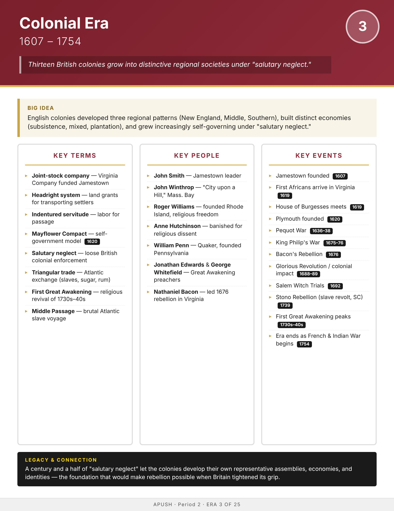

Era
Wise
AP History
AP United States History
Home
Course Sequence
Eras
Exam Prep
DBQ Guides
← Course Sequence
Era 3 of 25 · AP Period 2 · Lessons 3–4
Colonial Era
1607–1754
Open infographic full size
Print

← ERA 2
Age of Exploration & Early Contact
ALL ERAS
Eras index
ERA 4 →
Revolutionary Period